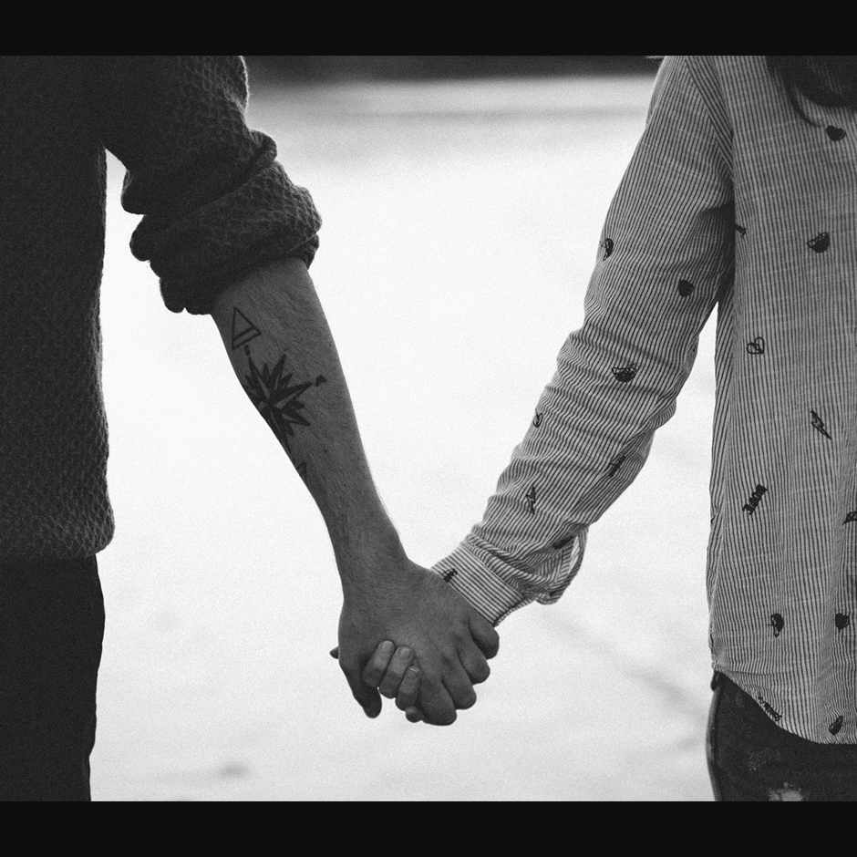

Welcome to 'two_of_us'. I am Rohan, designer of this website. I designed this website for my own and my girl just to give a little lovely touch to our relationship. I have been designing and planning this for months and now I have launched it. This project may not be the best version of what I could create or I will in future but trust me, everything I typed, designed and planned is filled with every single bit of emotion and love present inside me. This project, is more than just a piece of my day-night work and everything else. None of us saw this coming and now we are together. This is our little story.
